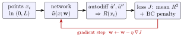
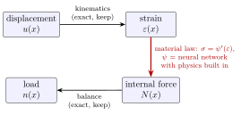

Lecture B
PINNs and PANNs in One Dimension
Builds on Lecture A. The subject: physics-informed and physics-augmented neural networks. We stay strictly in 1D: the bar of Lecture 2 and its thermal twin from the exercise.
B.1 PINNs: the equation as the loss
A physics-informed neural network (PINN) solves a boundary value problem with no data at all, by an assembly of parts you already own. Take the bar problem — say Case B of Section 2.4, generalized to a prescribed end displacement: \((EA u')' + n = 0\), \(u(0) = \bar u\), \(N(L) = \bar F\). Choose the neural ansatz \(\tilde u(x; \mathbf{w})\) of (A.3). Pick a set of points \(x_1,\dots,x_m\) in the domain — the PINN literature calls them, with no irony, collocation points. Define the loss \[J(\mathbf{w}) \;=\; \underbrace{\frac1m \sum_{i=1}^m \Bigl[\, EA\,\tilde u''(x_i) + n(x_i) \,\Bigr]^2}_{\text{equation residual, squared}} \;+\; \underbrace{\lambda_0\bigl(\tilde u(0) - \bar u\bigr)^2 + \lambda_L\bigl(EA\,\tilde u'(L) - \bar F\bigr)^2}_{\text{boundary conditions, as penalties}} \tag{B.1}\] and run gradient descent on \(\mathbf{w}\) (Fig. B.1). That is the whole method. The derivatives \(\tilde u'\), \(\tilde u''\) are computed exactly — the network is a formula, and the chain rule differentiates formulas; this is called automatic differentiation, and it is the same machinery that supplies \(\nabla J\). No finite differences, no mesh. (The companion notebooks keep things transparent and compute \(\nabla J\) by finite differences instead; only the \(x\)-derivatives of the network are exact there.)

Place it in the Lecture 2 taxonomy and the novelty shrinks to two substitutions: a PINN is least-squares collocation (Sections 2.6–2.7) with (a) a neural ansatz in place of polynomials and (b) gradient descent in place of a linear solve. The vocabulary did not even change. What is genuinely new is where the boundary conditions went — into the loss, as penalties. Lecture 2 never did that, and the difference deserves its own section.
B.2 Boundary conditions: by construction or by persuasion
Look again at (B.1). The boundary terms are soft: the optimizer is bribed (with weights \(\lambda_0, \lambda_L\)) into approximately honoring the supports. At any finite stage of training, \(\tilde u(0) \ne \bar u\) — the wall leaks. Choosing the bribes is real work: too small, and the network solves the wrong problem; too large, and the equation term is drowned. Contrast everything we built before:
In Lecture 2 we chose ansatz functions that satisfied the essential conditions identically — \(\varphi = x(L-x)\) cannot violate \(u(0)=0\) however its coefficient moves.
With shape functions, the Kronecker property turned an essential condition into “set \(u_1 = \bar u\)”: exact, by construction (Section 2.10).
Natural conditions never needed enforcement at all — the weak form absorbed them (Section 2.9).
The same trick is available to networks: build the condition into the family, e.g. \[\tilde u(x) = \bar u + x\cdot \mathrm{NN}(x;\mathbf{w}),\] which satisfies \(\tilde u(0) = \bar u\) for every \(\mathbf{w}\) — a hard constraint (this idea is as old as 1998, older than the word PINN). It is not always easy — on a complicated 2D boundary, constructing such a multiplier function takes effort, which is exactly why penalties are popular — but the principle is worth tattooing somewhere:
Key idea
A constraint can be imposed by construction (build a family that cannot violate it) or by persuasion (penalize violations in the loss). Construction is exact, removes tuning knobs, and shrinks the search space; persuasion is flexible and easy to code, but approximate and in need of weight-balancing. FEM is a monument to the first strategy; vanilla PINNs choose the second; the best of the neural methods — Lecture B’s final section among them — move whatever they can back to the first.
B.3 The energy version
PINNs as written attack the strong form — second derivatives, residual at points. Lecture 2 taught us the alternative road: the weak form, equivalently (for our problems) the energy. For the bar, the potential energy of a candidate \(\tilde u\) is the function-space version of \(\Pi = \tfrac12\mathbf{u}^{\mathsf{T}}\mathbf{K}\mathbf{u} - \mathbf{u}^{\mathsf{T}}\mathbf{f}\): \[\Pi[\tilde u] = \int_0^L \tfrac12\,EA\,(\tilde u')^2 \,\mathrm{d}x - \int_0^L n\,\tilde u \,\mathrm{d}x - \bar F\,\tilde u(L),\] and one can train the network by minimizing \(J(\mathbf{w}) = \Pi[\tilde u(\cdot;\mathbf{w})]\), the integrals evaluated by quadrature at sampled points (the method known as Deep Ritz). All three gifts of Section 2.9 transfer: only first derivatives of the network are needed; the natural condition \(\bar F\) enters by itself, as a work term; and the loss inherits the minimum structure of the physics instead of an arbitrary squared residual. The essential condition \(u(0) = \bar u\) does not come for free: it must still be built in (\(\bar u + x\cdot\mathrm{NN}\)) or penalized, exactly as the ansatz functions of Lecture 2 had to satisfy it. The mapping is exact: strong-form PINN \(\leftrightarrow\) collocation/least squares; Deep Ritz \(\leftrightarrow\) Ritz–Galerkin energy minimization. The methods table of Lecture 2 did not grow a new row; it grew a new column of ansätze.
B.4 An honest scorecard
Let us keep ourselves honest, in both directions.
On our bar, the comparison is a massacre. Two linear elements: one \(2\times2\) solve, nodal values exact (Section 2.12). A PINN on the same problem: thousands of gradient steps, every derivative of the loss evaluated over all collocation points at each step, to end — if training converges — near, not at, the solution, with the supports only approximately honored and no error bound in hand. For solving one well-posed PDE on a meshable domain, classical FEM is the gold standard, with a mature convergence theory (its roots go back to Ritz, 1908).
So why the excitement? Because the neural formulation buys freedoms FEM cannot easily offer:
No mesh. Only sampled points — valuable where meshing is the bottleneck, and in high-dimensional or parametric problems (solve for all loads/geometries in one family) where meshes explode combinatorially.
Data and physics in one pot. Suppose the stiffness \(EA(x)\) is unknown, but \(u\) has been measured at a few stations. Make \(EA\) a second (small) network and minimize \[J = \underbrace{\textstyle\frac1m\sum_i R(x_i)^2}_{\text{physics residual}} \;+\; \underbrace{\textstyle\sum_d \bigl(\tilde u(x_d) - u^{\mathrm{meas}}_d\bigr)^2}_{\text{data residual}} ,\] and both unknowns are trained together. The two residual notions of Lecture A — distance to the equation, distance to data — finally sit in one loss. Such inverse problems are where PINNs genuinely shine; classical FEM needs a separate optimization layer (adjoint methods) for the same task.
One toolbox. Autodiff frameworks and GPUs come for free from the machine-learning world.
And the standing costs: a nonconvex landscape (training can stall — Fig. A.3 was not a joke), soft boundary conditions, delicate loss-weight tuning, and guarantees that are, for now, thin where FEM’s are thick. A fair summary: PINNs are not a better FEM; they are a different trade, exchanging guarantees for flexibility — bought exactly where data, unknowns and physics must be mixed.
B.5 PANNs: physics moved into the architecture
The second modern method answers the keyidea of Section B.2 more radically: move the physics itself from persuasion to construction. A physics-augmented neural network (PANN) does not replace the solver at all. Look once more at the three-box diagram of Fig. 2.3. Kinematics is exact geometry; balance is exact bookkeeping of forces; the one arrow that was ever empirical — remember, we said so when we drew it — is the material law. That is the arrow a PANN replaces (Fig. B.2): learn the material from experimental data, keep everything else classical.

But not with an arbitrary network: with a constrained one, so that the physical requirements of a material law hold exactly, for any value of the weights. In our 1D setting the requirements read:
Energy first (thermodynamic consistency): do not learn \(\sigma(\varepsilon)\) directly; learn a stored-energy function \(\psi(\varepsilon)\) and derive \(\sigma = \mathrm{d}\psi/\mathrm{d}\varepsilon\) — the Section 1.6 idea, promoted to a design rule. A stress that comes from a potential can never create energy from nothing around a loading cycle.
Stability: build \(\psi\) as a convex function of \(\varepsilon\) (special network architectures guarantee convexity by construction), so the tangent stiffness \(\mathrm{d}^2\psi/\mathrm{d}\varepsilon^2 \ge 0\) — the learned stiffness can never turn negative, whatever the data.
Calibrated reference: the undeformed state should be stress- and energy-free; enforce it exactly with a correction term, \(\hat\psi(\varepsilon) = \psi(\varepsilon) - \psi(0) - \psi'(0)\,\varepsilon\) (subtracting a linear function preserves convexity — check!).
In 2D and 3D the list grows (frame-indifference, material symmetry, polyconvexity), but the strategy is identical: every item moved into the architecture is one item the training data need not teach and the optimizer cannot violate. The weights are then fitted to measured stress–strain data by minimizing \(\sum_d (\hat\sigma(\varepsilon_d) - \sigma_d^{\mathrm{meas}})^2\) — which is, closing the circle, plain nonlinear regression from Lecture A. And once trained, \(\hat\psi\) is handed to a completely classical simulation: the element integrals \(\int \mathbf{B}^{\mathsf{T}}(\cdot)\mathbf{B}\) of (2.16) simply call the network (and its derivative) where they used to call Hooke’s law. PANNs live inside FEM, as its material subroutine.
Remark
The division of labor could not be cleaner, and the three-box diagram is what makes it visible: a PINN replaces the solver (the dashed inverse arrow) and keeps the physics in the loss; a PANN replaces one physical box (the empirical one) and keeps the classical solver. The diagram earns its keep: it tells you precisely which part of the problem each method trusts to a network — and Lecture 4 (Section 4.7) gives the diagram its proper name and shows its reach across physics.
B.6 The grand dictionary, and the road back
| FEM (L. 1–2) | regression (L. A) | PINN (L. B) | PANN (L. B) | |
|---|---|---|---|---|
| given | equation + BCs | data | equation + BCs (+ data) | data for the material; equations for the rest |
| family | fixed shape functions | chosen features | neural network | constrained network for \(\psi\) |
| parameters | nodal values | coefficients | weights | weights |
| residual minimized | weighted equation residual | data misfit | equation residual at points (+ data misfit) | stress-data misfit |
| BCs / constraints | by construction + weak form | — | penalties (or construction) | physics by construction |
| solved by | one linear solve | one linear solve | gradient descent | gradient descent, then classical FEM |
| guarantees | convergence theory | classical statistics | few, active research | constraints exact; fit empirical |
One table, four columns, and every row filled with concepts from Lectures 1–2: ansatz, residual, conjugate boundary data, energy, minimization. That was the point of the detour — the modern methods are not a different subject, but new coordinates in a space you already knew how to navigate. If you want to read further, the entry points are: Lagaris et al. (1998) for networks with hard boundary conditions; Raissi, Perdikaris & Karniadakis (2019), who coined PINN; E & Yu (2018) for Deep Ritz; and Linden et al. (2023) for a guide to physics-augmented constitutive networks.
Worked supplements and companion exercises
Supplement S1 — Worked PINN Examples in One Dimension: six examples from a one-parameter PINN traced by hand to the detection of a hidden damage zone. Implemented in Exercise B1 (
Exercise_B1_PINN.ipynb).Supplement S2 — Worked PANN Examples in One Dimension: Hooke’s law as the smallest PANN, constraints proved with a pencil, constrained versus unconstrained networks, and a learned material inside a Newton solver. Implemented in Exercise B2 (
Exercise_B2_PANN.ipynb).Exercise B3 (
Exercise_B3_Transfer.ipynb) transfers both methods to new equations: a cooling fin, a beam, and an eigenvalue problem.
All three notebooks come with separate sample-solution notebooks.
Looking ahead
End of the detour. If you took it straight after Exercise 2, the classical road resumes with Lecture 3, which takes the spring picture into the plane — real trusses, with angles — and Lecture 4, which brings the full Lecture 2 machinery to two-dimensional continua, where neither springs nor networks but triangles are the natural next element. The worked supplements S1 and S2 follow next in print; Lecture C picks up the network thread again once Lecture 4 is behind you.